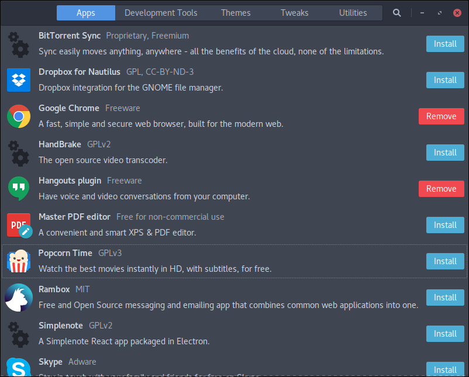

Szukając informacji jak zainstalować Sublime Text na Fedorze naktnąłem się
na narzędzie o nazwie Fedy.
Program umożliwia na:
- łatwą instalację wielu aplikacji jak i kodeków
- instalację czcionek Microsoftu
- konfiugrację wygładzania czcionek czy też konfigurację touchpadu
- dograć dodatkowe tematy Gnome oraz paczki ikon (polecam Paper oraz Arc)
Narzędzie można zainstalować za pomocą polecenia:
curl https://www.folkswithhats.org/installer | sudo bash
a uruchomić odszukując Fedy w Dashu.
